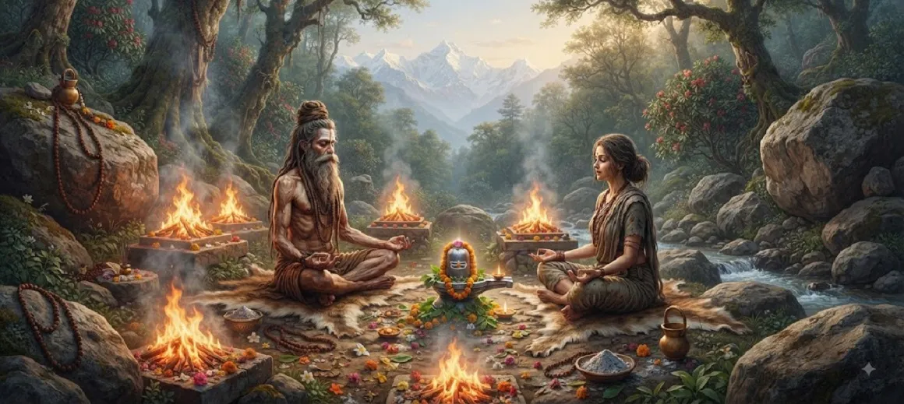

The Penance of Atri and Anasuya
The third chapter of the Kotirudra Samhita narrates the profound and inspiring account of the severe penance undertaken by the revered sage Atri and his exceptionally pious wife, Anasuya.
Through unshakeable determination, complete self-restraint, and deep meditation on Lord Shiva, Atri and Anasuya demonstrated the true power of spiritual austerity and unwavering devotion.
Their dedicated spiritual practice purified their surroundings, elevated their consciousness, and prepared the ground for the glorious manifestation of divine grace.
Chapter 3 Highlights
Severe Austerity
Sage Atri and Anasuya engage in intense spiritual penance in the forest hermitage.
Meditation on Shiva
Their minds remain anchored entirely in contemplation of Lord Shiva.
Absolute Self-Restraint
Demonstrates supreme control over desires, senses, and worldly distractions.
Purity of Anasuya
Anasuya's unmatched chastity and devotion shine as a beacon of virtue.
Invocation of Grace
Their sincere austerities successfully invoke the compassionate attention of Mahadeva.
Foundation for Atrīśvara
Sets the stage for the miraculous establishment of the sacred Atrīśvara Linga.
Core Topics in This Chapter
Life in the Sacred Hermitage
Chapter 3 begins by describing the peaceful and spiritually charged atmosphere of the hermitage where sage Atri and his noble wife Anasuya resided.
Far from the distractions of the material world, their daily lives were rooted in righteousness, Vedic study, hospitality, and constant remembrance of the Supreme Lord.
The Resolve to Undertake Penance
Driven by a deep aspiration to realize the ultimate truth and experience the direct presence of Lord Shiva, Atri resolved to perform extraordinary penance.
Anasuya wholeheartedly supported and joined him in this sacred undertaking, exemplifying the ideal partnership of spiritual growth and mutual devotion.
Nature of Their Severe Austerities
The text details the rigorous physical and mental disciplines practiced by the sage. They withstood extreme weather and physical hardships with absolute equanimity.
Their austere lifestyle stripped away all superficial desires, leaving their minds clear, focused, and intensely receptive to higher spiritual realities.
The Supreme Purity and Devotion of Anasuya
Special emphasis is placed on the character of Anasuya, whose name signifies freedom from malice or jealousy. Her purity of heart and unwavering chastity became legendary.
Through her spiritual strength and steadfast devotion, she equaled the sage in austerity, proving that spiritual greatness belongs equally to those who live in pure devotion.
Mastery Over Mind and Senses
Atri and Anasuya achieved complete mastery over their senses, silencing the turbulent fluctuations of the mind through continuous meditation on Mahadeva.
This inner tranquility transformed their hermitage into a sacred sanctuary where even wild creatures lived in peace, touched by the high vibrations of their penance.
The Divine Response of Lord Shiva
The intensity of their combined penance eventually reached the celestial realms, moving Lord Shiva to manifest His grace and grant them an audience.
This divine reaction underscores the core truth of the Shiva Purana: that sincere, selfless austerity never fails to attract the personal attention of the Lord.
Preparation for the Grace of Atrīśvara
The chapter concludes by setting the stage for the boon-granting manifestation of Shiva, which directly leads to the establishment of the sacred shrine of Atrīśvara.
Readers are thus smoothly transitioned from the disciplines of ascetic practice to the glorious divine reward detailed in the subsequent chapter.
Key Teachings of Chapter 3
Power of Joint Dedication
Spiritual partnership rooted in shared devotion multiplies inner strength.
Steadfast Austerity
Overcoming physical and mental trials purifies the vessel of the soul.
Virtue of Anasuya
Freedom from malice and unwavering chastity elevate human character.
Constant Remembrance
Anchoring the mind in Shiva dissolves worldly agitation.
Certainty of Grace
Pure penance unfailingly draws the compassionate glance of Mahadeva.
Sanctuary of Peace
True spiritual discipline radiates peace to the entire environment.
Spiritual Reflection
The penance of Atri and Anasuya teaches us that spiritual advancement requires deep resolve, purity of heart, and unyielding self-discipline. When husband and wife, or any spiritual companions, walk the path of righteousness and meditation together, they create an atmosphere of divine grace that transforms their lives and touches the higher realms.
Living the Message of Chapter 3
Incorporate elements of mental discipline and self-restraint into daily life. Consciously reduce distractions and dedicate time to quiet contemplation or prayer.
Cultivate the quality of Anasuya—freedom from jealousy and malice—in your interactions with others, fostering harmony and goodwill in your family and community.
Approach challenges with patience and equanimity, viewing them as opportunities to strengthen inner resolve rather than reasons for agitation.
Key Spiritual Concepts
A revered Vedic sage known for his supreme penance and spiritual wisdom.
Atri’s devoted wife, celebrated for her supreme chastity and freedom from envy.
Intense spiritual austerity, discipline, and penance undertaken for realization.
Equanimity and mental balance amidst dualities and hardships.
The great God Shiva, ultimate refuge of all ascetics and devotees.
Divine grace bestowed upon seekers as the fruit of sincere devotion.
Chapter Summary
Kotirudra Samhita Chapter 3 presents the inspiring account of the severe penance undertaken by sage Atri and his pious wife Anasuya. It explores their life in the hermitage, their unshakeable resolve, strict self-restraint, and continuous meditation on Lord Shiva. The chapter highlights Anasuya's unmatched purity and shows how their combined austerities successfully invoked the grace of Mahadeva, preparing the narrative for the glorious manifestation of Atrīśvara in the next chapter.
Frequently Asked Questions
1. What is the main subject of Kotirudra Samhita Chapter 3?
Chapter 3 details the severe penance and intense spiritual austerity undertaken by sage Atri and his devoted wife Anasuya to invoke Lord Shiva.
2. Who are Atri and Anasuya?
Atri is a revered Vedic sage and Anasuya is his exceptionally pious and devoted wife, known for their unwavering dedication to righteousness and ascetic life.
3. Why did Atri and Anasuya perform penance?
They performed intense penance to attain supreme spiritual realization, purity, and the direct grace and vision of Lord Shiva.
4. What virtues are highlighted through their penance?
Their penance highlights virtues such as patience, absolute self-restraint, mutual dedication, purity of mind, and unyielding faith in the Divine.
5. How does this chapter connect to the surrounding chapters?
Chapter 3 follows the greatness of the Shiva Linga and directly leads into Chapter 4, which details the manifestation and greatness of Atrīśvara.
6. What is the ultimate lesson of Atri and Anasuya's story?
The story teaches that sincere austerity coupled with complete devotion dissolves ego and invokes the highest blessings of Mahadeva.
“Through severe penance and pure devotion, Atri and Anasuya transformed their hermitage into a living testimony of divine grace.”
Continue Through Kotirudra Samhita
Chapter 3 explores the penance of Atri and Anasuya. Continue to Chapter 4, The Manifestation of Atrishvara.